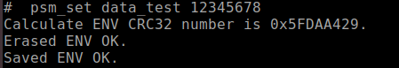
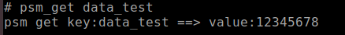
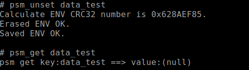
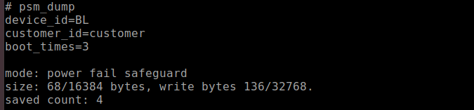
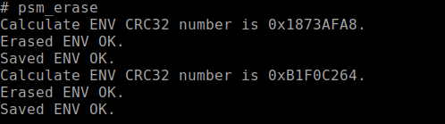

PSM
总览
本文档主要介绍PSM的使用，其主要是依赖Easyflash库来实现的，包括数据的存储、获取、dump和擦除功能。
使用步骤
编译
customer_app/sdk_app_psm工程并下载bin文件。使用
psm_set <key> <value>命令向指定ENV_name中写入数据，如输入psm_set data_test 12345678命令表示将ENV_name为data_test的值设为12345678；使用
psm_get <key>命令读出指定ENV_name中存储的值，如读取上面写入的数据，输入命令：psm_get data_test；使用
psm_unset <key>命令清除指定ENV_name中存储的值，如清除上面写入的数据，输入命令：psm_unset data_test；使用
psm_dump命令可以将所有ENV_name存储的信息dunmp出来，如输入命令：psm_dump，可以看到mode。size等相关信息；使用
psm_erase命令可以将所有ENV_name存储的信息清除。
应用实例
- 初始化
easyflash_init();
在操作psm时首先需要调用easyflash的初始化接口。该函数在 customer_app/sdk_app_psm/sdk_app_psm/main.c 中的 static void aos_loop_proc(void *pvParameters) 函数里完成初始化。
- 写数据
ef_set_env(argv[1], argv[2]);
ef_save_env();
写数据首先调用ef_set_env()接口写入数据，接着ef_save_env()接口将数据保存起来。
- 读数据
ef_get_env(argv[1]);
调用此接口即可读取相应key的数据。
- dump数据
ef_print_env();
调用此接口打印所有存储在psm中的数据。
- 擦除数据
ef_del_env(argv[1]);
ef_save_env();
擦除ENV_name为argv[1]中的数据。
ef_env_set_default();
调用此接口将擦除保存在psm中所有的数据。